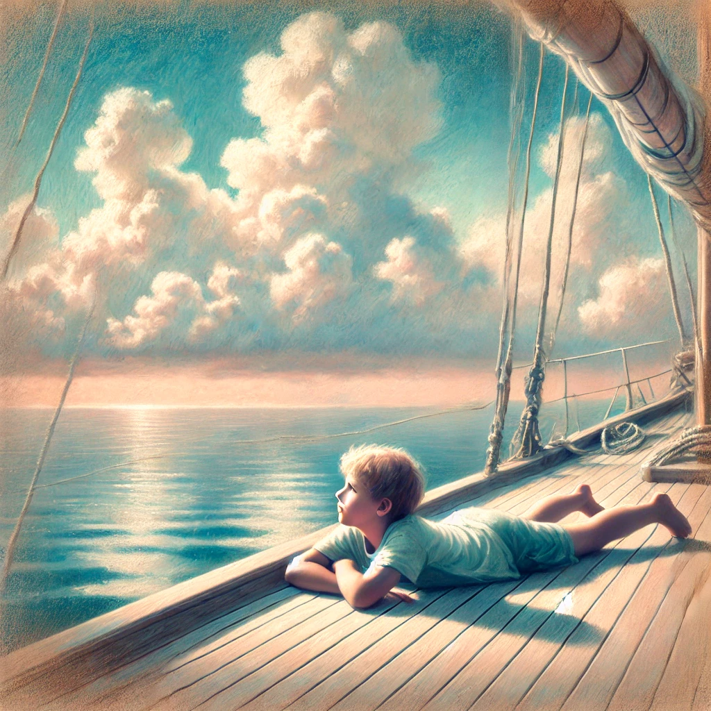

18. Dezember
Die Ueberfahrt
Das Meer lag still da, wie ein silbernes Tuch, das sich bis zum Horizont spannte. Das Boot glitt ruhig über die Adria, und in der Ferne waren schon die Silhouetten griechischer Inseln zu erkennen, deren Umrisse im sanften Licht der sinkenden Sonne verschwammen. Johann saß auf einer Bank am Deck, den Blick auf die endlose Weite gerichtet, während Maggy neben ihm stand und die Arme auf die Reling stützte. Es war einer dieser Momente, in denen die Stille mehr sagte als Worte.
„Maggy,“ begann Johann schließlich zögerlich, „kannst du mir helfen, meine Fähigkeiten weiterzuentwickeln?“ Er drehte sich zu ihr um, seine Augen suchten ihren Blick. „Und… woher weißt du eigentlich so viel über diese Prophezeiung?“
Maggy zog die Augenbrauen leicht zusammen, als würde sie nach den richtigen Worten suchen. Schließlich wandte sie sich ihm ganz zu. „Das ist eine lange Geschichte,“ sagte sie mit einem Seufzen. Sie setzte sich neben ihn, “da muss ich weit ausholen”.
„Vor ein paar Jahren waren mein Papa und Carlos eng befreundet,“ begann Maggy. „Damals habe ich oft mit Thea gespielt, Carlos’ Tochter. Sie ist in meinem Alter und total nett. Wir haben uns immer Geschichten ausgedacht und Spiele erfunden. Papa hat viel Zeit mit Carlos verbracht, und sie haben über diese Prophezeiung gesprochen. Ich habe nicht alles verstanden, aber ich wusste, dass Carlos dachte, Thea könnte etwas Besonderes sein.“
Johann nickte stumm, seine Neugier war geweckt. Maggy fuhr fort. „Carlos hat herausgefunden, dass in eurer Familie alle hundert Jahre jemand geboren wird, der diese besonderen Fähigkeiten hat. Kinder, die am 24. November Geburtstag haben. Er hat mir gesagt, dass es in einem alten Buch aufgeschrieben steht. Er dachte, dass Thea die Nächste sein könnte, weil sie manchmal so… komisch war. Sie hat Sachen gewusst, die sie gar nicht wissen konnte. Oder sie hat plötzlich Ideen gehabt, die total verrückt waren, aber irgendwie richtig.“
„Besonders?“ fragte Johann, seine Stimme kaum mehr als ein Flüstern.
„Ja,“ sagte Maggy. „Thea war wirklich besonders. Sie war schlau, schnell im Kopf und manchmal irgendwie… anders. Carlos hat sie immer mehr üben lassen, damit sie besser mit ihren Ideen umgehen konnte. Wir haben dann ein Spiel draus gemacht. Mein Papa hat gesagt, Carlos wollte sie vor irgendwas beschützen. Ich hab das damals nicht verstanden, aber jetzt vielleicht ein bisschen.“
„Was ist aus ihr geworden?“ fragte Johann, seine Stimme bebte leicht vor Spannung.
Maggy sah ihn an, dann wandte sie den Blick ab. „Das muss Carlos dir selbst erzählen,“ sagte sie leise. Johann wollte protestieren, aber etwas an ihrer Stimme hielt ihn davon ab.
Nach einem Moment der Stille fragte er: „Weisst du, warum meine Eltern immer gesagt haben, dass ich keinen Onkel habe?“
Maggy zögerte, bevor sie antwortete. „Nicht genau. Aber ich weiß, dass Carlos sich mit vielen Menschen in der Familie zerstritten hat, weil er Thea beschützen wollte. Er wollte, dass sie sicher ist, und ich glaube, er wollte, dass deine Eltern dich auch vorbereiten, falls die Prophezeiung auf dich zutrifft. Aber deine Eltern wollten davon nichts wissen. Mein Papa hat gesagt, dass sie nicht an übernatürliche Dinge glauben. Am Ende haben sich die Familien deswegen gestritten.“
Johann nickte nachdenklich. Ein Kloß bildete sich in seinem Hals, und plötzlich wurde ihm schmerzlich bewusst, wie sehr er seine Eltern vermisste. Jetzt, da die Verfolgung vorbei war und Ruhe eingekehrt war, breitete sich Heimweh aus.
„Meinst du, ich könnte mit ihnen Kontakt aufnehmen?“ fragte er leise. „Welche Fähigkeiten habe ich überhaupt?“
Maggy lächelte schwach. „Das könnte möglich sein,“ sagte sie. „Aber es ist eine fortgeschrittene Leistung. Hier auf dem Schiff hast du allerdings die perfekte Ruhe, um es zu versuchen. Denke ganz fest an den Ort, an dem du sie vermutest. Dann könnte es klappen. Suche dir einen ruhigen Platz, entspanne dich und gehe tief in dich. Und dann… noch tiefer.“
Johann nickte entschlossen. Er suchte den Bug des Schiffes auf und legte sich flach auf das Holzdeck. Das sanfte Auf und Ab der Wellen beruhigte ihn. Er schloss die Augen und dachte an seine Eltern. Er stellte sich vor, wie sie jetzt wahrscheinlich in ihrem Apartment in Lissabon waren, wie sie auf ihn warteten. Im ersten Stock ihres Wohnhauses. Es war alles so vertraut.
Langsam versank Johann in eine Art Schlummer. Bilder formten sich vor seinem inneren Auge. Er sah seine Eltern, wie sie sich zum Abendessen setzten. Doch dann veränderte sich etwas. Die Wohnung sah plötzlich anders aus. Ein riesiges Regal voller Buecher, das er noch nie gesehen hatte, stand an der Wand und die Bilder sahen anders aus. Das ueber dem Klavier stach ihm besonders ins Auge. Es zeigte abstrakte dunkle Figuren. Und dann sah er einen Jungen, der sich zu seinen Eltern setzte. Ein Junge in seinem Alter.
Johann erstarrte. Der Junge könnte er selbst sein, und doch war er es nicht. Er sah ihm ähnlich, und doch anders aus. Auch seine Eltern hatten sich verändert, sie waren… fast fremd. Der Junge sagte: „Papa, liest du mir gleich die Geschichte aus dem Adventskalender weiter vor?“
„Okay, Nahuel, aber danach musst du ins Bett gehen,“ antwortete der Vater. Nahuel. Ein eigenartiger Name, doch irgendwie schön. Vertraut.
„Nahuel,“ rief die Mutter. Johann wollte sich umdrehen, doch in diesem Moment erwachte er abrupt. Sein Herz schlug heftig, und er war pitschnass. Neben ihm rief Maggy laut: „—hann, ‘ne Welle! ‘ne Welle!“
Benommen brauchte Johann einige Sekunden, um sich zu orientieren. Es war, als wäre er eben noch in einer anderen Welt gewesen und nun zurückkatapultiert worden. Er blinzelte in Maggys lachendes Gesicht. Trotz des Chaos verspürte er eine seltsame Ruhe. Eine tiefe Gewissheit, dass am Ende alles gut werden würde. Morgen kommen sie an, hat Hans gesagt, dann kann Carlos alle Fragen beantworten.
Was soll Johann Carlos fragen?